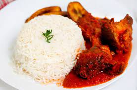

Bethel Food shop is a food cafe that is known for making delicious rice dishes and putting smiles on people's face through our services. BFS was founded by Stemzilla on the 1st of October 1960, and has since then benn offering exceptional service to the society.
Do you need to avoid the stress of cooking before going to work? If yes, look no further. Here at Bethel Food Shop, you can get your tasty rice meal to your doorstep without stress. Just contact us! We also hope that our little shop will add to the beauty of the city and the people as you patronise us.
| CHOOSE ONE OR MORE! | |||
|---|---|---|---|
| RICE | QUANTITY | PRICE | |
| Jollof Rice |  |
One Standard Serving Plate | ₦ 1,000 |
| One Standard Serving Bowl | ₦ 2,000 | ||
| Fried Rice | One Standard Serving Plate | ₦ 1,100 | |
| One Standard Serving Bowl | ₦ 2,200 | ||
| Coconut Rice |  |
One Standard Serving Plate | ₦ 1,300 |
| One Standard Serving Bowl | ₦ 2,600 | ||
| White Rice |  | One Standard Serving Plate | ₦ 800 |
| One Standard Serving Bowl | ₦ 1600 | ||
| NOTE: All our rice dishes come with meat and stew where necessary in quantity depending on the size of the order. All for free! | |||